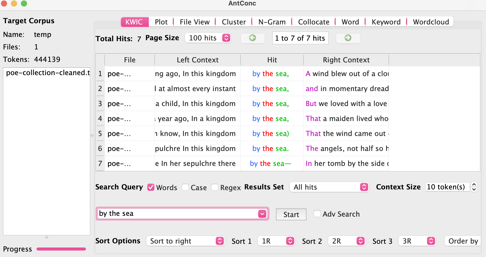
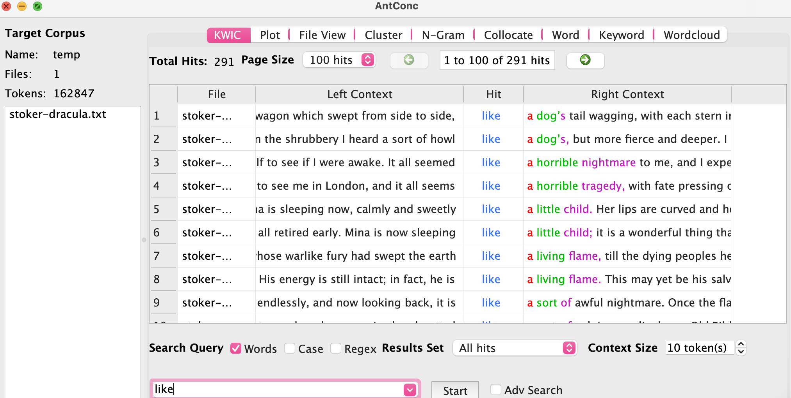

The screen captures below show my findings between Edgar Allan Poe's works and
Bram Stoker's Dracula. By using these two texts, I was able to compare and contrast
a common example of Gothic horror fiction with the unique collection of works by
Edgar Allan Poe. I wanted to see what I could find in Poe's collection that
separated himself from the compared text of "Dracula". All together, the collection
of Poe's works has a total of 443,344 words, while Bram Stoker's Dracula has a total
of 162,020. Using Voyant, I was able to view the number of words in a sentence.
Poe's collection had 23.2 words per sentence, while Stoker's "Dracula" had 19.1.
Given that "Dracula" is smaller than the entirety of Poe's collection of works, the
19.1 words per sentence is impressive.
Dracula and Poe Word Comparisons
Using Voyant, I was able to compare and contrast the word clusters of both
Poe's collection and Dracula. I tried to look for words that stood out to me the
most; the word "man" in Poe's collection intrigued me as it didn't show up at all in
Dracula's word cluster. Was this word used in reference to a specific person? Or was
it used to describe someone? Using AntConc, I explored N-gram frequencies, revealing
the ngram "man of" had a frequency of 60. I then used the KWIC tool to view the
context of the ngram. I found that Poe uses the word "man" to describe his
characters. Phrases like "man of genius" and "man of business" are
repeated throughout certain poems. I believe this finding to be telling of how Poe
uses certain words and phrases to put emphasis on what he wants the reader to
fully acknowledge. When compared to Bram Stocker's Dracula, the ngram "man of" only
has a frequency of 10, which shows that Stocker has a different approach when it
comes to using this phrase to describe and emphasize.
"Edgar Allan Poe Collection Word Cluster" "Bram Stoker's Dracula Word Cluster"
Poe and Stoker Ngrams
I wanted to test Poe and Stoker's use of figurative language and see which examples
they relied on the most. The word "like" appears in both texts word clusters, so
I was curious as to whether the word was being used in the context of a simile.
Ngram showed that "like a" was used 80 times in Dracula and 95 times in Poe. This
finding shows how heavily Stoker relied on similes in Dracula, as the numbers are
very close even with the text being 1/3 the size of Poe's collection. This made me
curious as to what type of figurative language Poe tends to use the most in his
poems. After finding Poe's repetition of the phrase "man of", I decided to look for
more trends in the repetition of words. I used the ngram tool to look for unusual
phrases that had a high frequency rate. In the poem "Annabel Lee", Poe repeats a
version of the phrase "by the sea" eight times. In the poem "The Raven", Poe puts
emphasis on the word "nevermore" by repeating it 11 times. Through witnessing Poe's
use of repetition, we can see how it brings unity to the text. The reiteration of
words helps to establish the overall mood by increasing tension and creating fear
within the reader.

"Edgar Allan Poe's Use of Repetition

"Bram Stocker's Use of Similes"